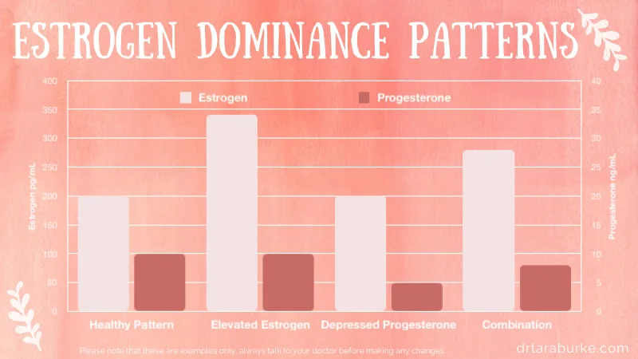

Hormone balance is one of the most common reasons patients pay me an initial visit, and a common question is whether I recommend supplements to balance hormones. In recent years, focus on women’s health has gone from just a yearly PAP smear and breast exam to discussion around optimal health and wellness. Women feel empowered to talk to their health care providers about topics that were previously perceived as “normal”- things like painful periods and PMS symptoms which includes cravings, mood changes, acne, and changes during perimenopause. Seeking treatment for hormone balance means that women are finally able to start the journey to optimal health and complete wellness.
I thought I would take some time to discuss some of my favorite herbs, nutrients, and nutrition options for hormone balance.
However, choosing supplements for hormone balance isn’t always cut and dry. Depending on why your hormones are imbalanced can mean that is it time for a different treatment plan.
Estrogen Dominance – Estrogen dominance is a quite common cause of hormone imbalance that occurs when estrogen levels are too high relative to progesterone levels. This can happen in a few ways:
Symptoms of estrogen dominance include: Tender breasts, irregular cycles – long or short, bloating, acne, breast cysts, PMS, headaches, anxiety, weight gain, difficulty sleeping, fatigue, hair loss, and difficulties getting pregnant. However, this is not an all-inclusive list.

The graphic above shows a healthy pattern and 3 patterns of estrogen dominance. Please take note that all of the unhealthy patterns are still within a typical lab reference range. Your hormones will come back “normal”. It’s the ratio between the hormones that are important! Adding a healthy pattern to the previously mentioned reasons for Estrogen Dominance leaves us with the following patterns for your hormones.
Low Estrogen – this is very characteristic for peri and post-menopausal women. As women transition into menopause, infrequent or nonexistent periods mean decreasing estrogen levels. For some women this transition is mild while for others it is very severe and debilitating.
Signs and symptoms include hot flashes, night sweats, vaginal dryness, joint and muscle pain, brain fog, bone loss, and low sex drive.
Elevated Progesterone – While not as common as estrogen dominance, this hormonal imbalance is still possible. Elevated Progesterone most often results from inappropriately dosed hormone replacement therapy. It can also occur with certain congenital disorders, ovarian cysts, and tumors.
Symptoms of progesterone dominance are very sensitive to the cause but can include, bloating, sleepiness and grogginess, and mood changes.
Elevated Testosterone – This is commonly seen in disorders like Polycystic Ovary Syndrome (PCOS), hirsutism, inappropriate dosed hormone replacement therapy, or less common congenital syndromes.
Signs of Elevated Testosterone include acne, unwanted/inappropriate hair growth on places such as your chin, irregular periods, and feeling “more aggressive/irritated”.
Low Testosterone – Low Testosterone is also seen commonly in the peri and post-menopause stages and is unfortunately a common part of ageing. I am also seeing it more frequently in younger females and can be an indicator of issues in the ovaries or adrenal glands.
Signs of Low Testosterone include low libido, fatigue, weakness, and depressed mood.
Other hormone imbalances – Thyroid and adrenal health can be impacted by changes in female hormone health. Conversely, female hormone health can be impacted by disorders of thyroid and adrenal glands. The best way to determine diagnosis and treatment is to see your health care provider that is trained in hormone imbalances.
As a Naturopathic Physician, I am lucky to have so many “tools in my toolbox” to provide treatment options to my patients having hormonal balance issues! Depending on symptom severity and patient preference, I can choose between a variety of options that will work best for them. This is one of the many reasons that I love Naturopathic Medicine and one of the reasons I often use supplements to balance hormones.
I love using herbal formulations with my patients in order to provide safe and effective relief for their symptoms. Herbals are a gentle way to treat for many symptoms such as hot flashes, painful periods, unpredictable periods, hormonal acne, fertility, sleep, and more! Here are some common herbal supplements to balance hormones and combat these unwanted issues
Unfortunately, there are so many wonderful herbal supplements to balance hormones that I cannot possibly mention them all. It is also important to know that there is more to herbs that simply checking what health issues they are indicated for. They also have synergistic properties, which means that some herbs work better together! A naturopathic doctor can come up with a herbal formula that is dosed safely and appropriately for your individualized health history and concerns. There are also pre-made supplements on the market which are formulated for hormone balance. My trustworthy brands in this category include Vitanica and Femenessence.
Often times we can’t rely solely on herbal supplements to balance hormones, and thus we must combine it with another method. One of my favorite ways to compliment herbal therapies is with dietary recommendations.
Whether a diet plan based around these changes is appropriate for you can be best determined by your health care provider.
For my women who have more severe symptoms supplements to balance hormones may not be enough and in this case Bioidentical Hormone Replacement Therapy (BHRT) can be a great option. With proper labs, follow-up, and customized dosing, this can be a safe step up in a patient’s therapy from more natural treatments. Remember, it’s all about safety first, so using the lowest level of therapy to provide adequate symptom relief is ideal!
There is no one herb, nutritional plan, product, or therapy that is good for everything hormones related. It is vital to determine what type of hormone imbalance you have and why. Finding the root cause to your health issues can bring you back to long-lasting optimal health – herbals, nutrition, and medications can help you there. A qualified health care professional can offer testing, interpretation, diagnosis, and treatment for your unique needs and goals!
Make an appointment with a doctor who can help to determine what medications or supplements to balance hormones are appropriate for your type of hormone imbalance.
Hudson, T. Women’s Encyclopedia of Natural Medicine [Paperback]. (McGraw-Hill; 1 edition, 1999). ↩
Hudson, T. Women’s Encyclopedia of Natural Medicine. (McGraw-Hill Education, 2007). ↩ ↩2 ↩3 ↩4 ↩5 ↩6 ↩7
Brown, D. Vitex agnus castus clinical monograph. Alternative Medicine Review 14, (2009). ↩
Schellenberg, R. Treatment for the premenstrual syndrome with agnus castus fruit extract: prospective, randomised, placebo controlled study. BMJ 322, 134–7 (2001). ↩
Skidmore-Roth, L. Mosby’s Handbook of Herbs and Natural Supplements. (Mosby Elsevier, 2010). ↩ ↩2
Gonzales, G. et al. Effect of Lepidium meyenii (Maca), a root with aphrodisiac and fertility-enhancing properties, on serum reproductive hormone levels in adult healthy men. J. Endocrinol. 176, 163–168 (2003). ↩
Meissner, H. O., Kapczynski, W., Mscisz, A. & Lutomski, J. Use of gelatinized maca (lepidium peruvianum) in early postmenopausal women. Int. J. Biomed. Sci. 1, 33–45 (2005). ↩
Murray, M. & Pizzorno, J. Textbook of Natural Medicine 4e. Textbook of Natural Medicine (2012). doi:10.1016/B978-1-4377-2333-5.00204-2 ↩
Contact Blossom Wellness